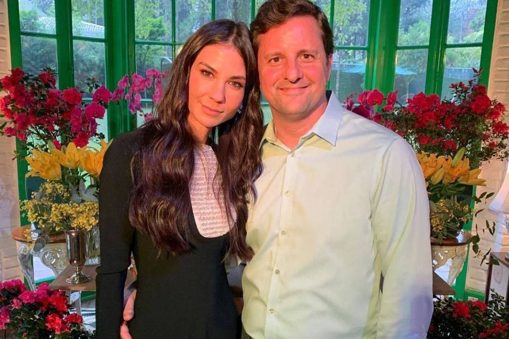

Marido de Amanda Klein parabeniza 'valentia' da jornalista contra Bolsonaro
Empresário foi citado depois que presidente foi questionado sobre imóveis que seus familiares compraram em dinheiro vivo
O marido de Amanda Klein, da Jovem Pan, parabenizou a jornalista nesta terça (6) pela "valentia e coragem" que ela teve durante a sabatina de Jair Bolsonaro (PL) na emissora.
Empresário, Paulo Ribeiro de Barros foi citado pelo presidente da República ao responder a questionamentos de Amanda sobre o fato de familiares do presidente terem negociado 107 imóveis desde 1990, e de 51 deles terem sido adquiridos total ou parcialmente em dinheiro vivo, segundo reportagem do UOL. Ao ser questionado por Amanda sobre a origem dos recursos, Bolsonaro respondeu: "Amanda, você é casada com uma pessoa que vota em mim. Não sei como é o teu convívio com ele na sua casa". A jornalista reagiu afirmando que sua vida particular não estava em pauta, e o presidente treplicou: "E a minha [vida] particular está em pauta por quê?". "Porque o senhor é uma pessoa pública, o senhor é o presidente da República".